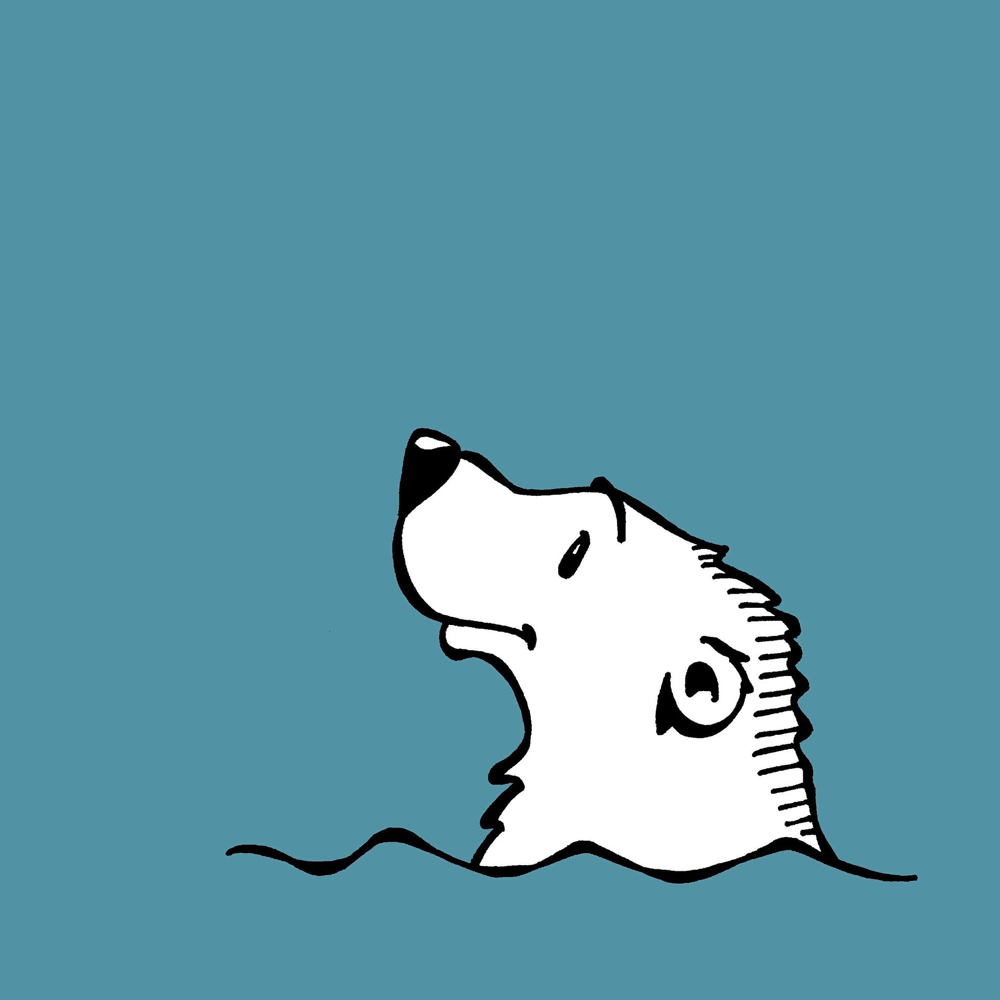
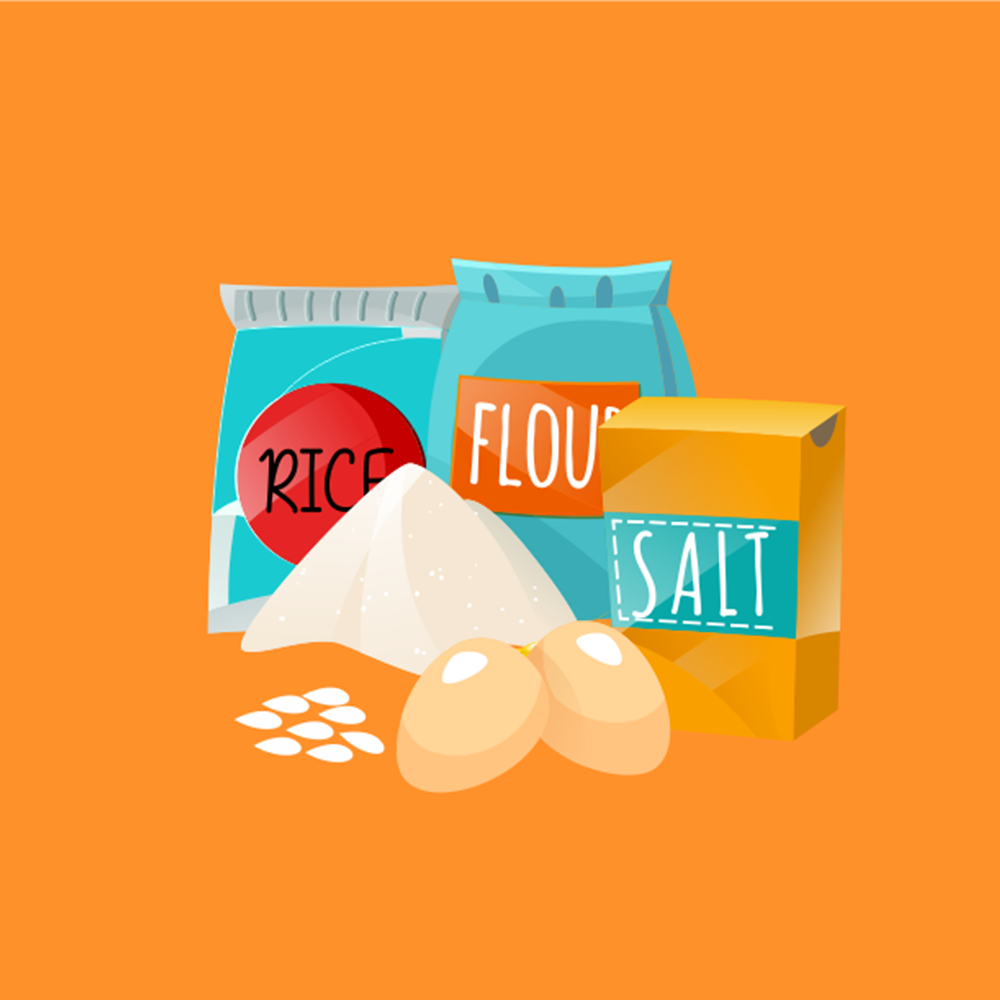

Youtube
#Steven
#Copy youtube
#HTML+CSS
종속형 시트 또는 캐스케이딩 스타일 시트는 마크업 언어가 실제 표시되는 방법을 기술하는 언어로, HTML과 XHTML에 주로 쓰이며, XML에서도 사용할 수 있다. W3C의 표준이며, 레이아웃과 스타일을 정의할 때의 자유도가 높다.
1M views 1 month age
1K
0
Share
Save
Report

Steven
1M subscribers
subscribe
Up next
프론트엔드(HTML+CSS)를 사용하여 Youtube홈페이지 만들어보기
Steven
82K views

프론트엔드(HTML+CSS)를 사용하여 Youtube홈페이지 만들어보기
Steven
82K views
 프론트엔드(HTML+CSS)를 사용하여 Youtube홈페이지 만들어보기 Steven 82K views
프론트엔드(HTML+CSS)를 사용하여 Youtube홈페이지 만들어보기 Steven 82K views